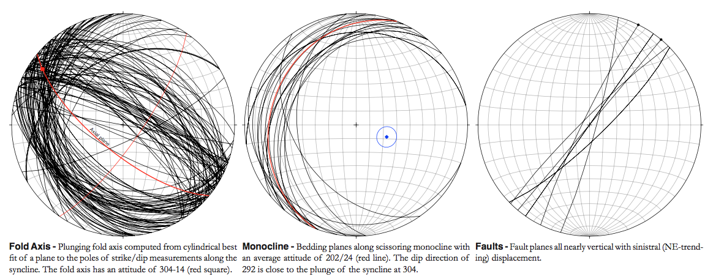

In 1970, Atwater discussed the onset of dextral strike-slip faulting in southern California occurring 15-20 million years ago. This dextral strike slip (also known as wrench tectonic regime), dominates the neotectonics of the region. The San Andreas Fault is a transform fault which is being affected by the Pacific Plate northward movement against the North American Plate. The faulting has broken/weathered the crust. These fractures become weakened points in the crust. As a result, the San Andreas Fault (SAF) system is one of the world's largest, active strike-slip faults and it causes complexity with California's geology. The SAF is hypothesized to have formed in response to the subduction of a spreading center under the western edge of North America. The geologic grain of California goes in NNW-SSE direction and the SAF also follows that trend, as it should. There is a huge exception, and thus accounting for the importance in studying the area (Diligencia Basin). The exception: The Transverse Range comprise of a group of WNW-ESE trending mountain ranges are the exception. Across these Transverse Ranges the trend that is expected from the San Andrea Fault system derails off its normal course. Furthermore, the Mendocino Triple Junction is the point where three plates meet and is in proximity of the Diligencia Basin.
The dominant structure in our area was an asymmetric northwest-plunging syncline with an axial plane trace striking approximately NW/SE. We also found a monocline striking approximately 202° and dipping approximately 24. A low-angle detachment fault with scissoring has displaced the monocline, which contains one right lateral fault. Smaller scale folding occurs in the many layers of dolomitic sandstone and evaporite. We found left-lateral faults in the southern limb of the syncline as well as one large left lateral fault in the northern limb.
To get the large-scale syncline, with axial plane trace NW/SE, σ1 needed to have been NE/SW and σ3 needed to have been vertical. The small scale folding within the finely bedded sandstone and evaporite layers results from variations in internal competence and the ductile nature of the salts. A second stress regime is required to cause the plunge present in the syncline. A σ1 oriented NW/SE is required. The scissoring, rotational motion visible in the faulted monocline must be driven by a less predictable stress field.
The San Andreas Fault is, in general, a NW/SE trending, dextral strike-slip fault. On a smaller scale, however, the SAF is made up of a network of smaller faults of differing type and displacement.
Our region is between the Helendale and Sheep Hole Faults that are part of the San Andreas system. The Helendale Fault trends 314°, and the Sheep Hole Fault is trending 330°. As the faults are subparallel, their motion drives compression in the south and extension in the north, providing the stress field required for folding.
Substratum-driven rotation in the past 10Ma accounts for the discrepancy between calculated offset and observed offset along the San Andreas Fault. In turn the rotation causes sinistral strike-slip faults within the rotating block and transpressional stress in the NW and SE.
We attribute the NW plunge of the fold to this transpressional stress. The scissoring fault running through the monocline is a direct result of the clockwise rotation through the neogene.
Mass faulting has damaged the continental crust. The widespread fractures become weaknesses in the crust. Because some areas are more susceptible to deformation that others, the strain distribution is not uniform. As noted by our area of study, areas that are more susceptible to deformation are at or near the plate boundary. The San Andreas Fault cuts across California causing the land to be moved north along the fault, however, the “San Andreas Fault” is not one seam between the Pacific and North American plates, but rather a system of smaller faults forming a patchwork across California. These unique faults combine to create mesoscale stress and strain systems, such as the one represented by our mapping area.
Overall regional strain shows the plate movement is northwest, yet the local strain differs due to the extensional faults that occur. Because the strain is not homogeneously distributed, but rather focused at the tips of the transpressional system, it manifests differently across geographic space. This creates faults of different displacement and class due to both compressional and extensional forces, but ultimately in net accordance with the large-scale systems.